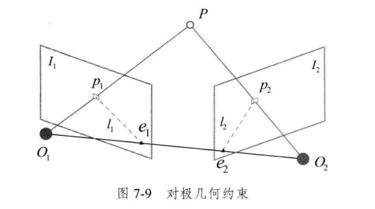
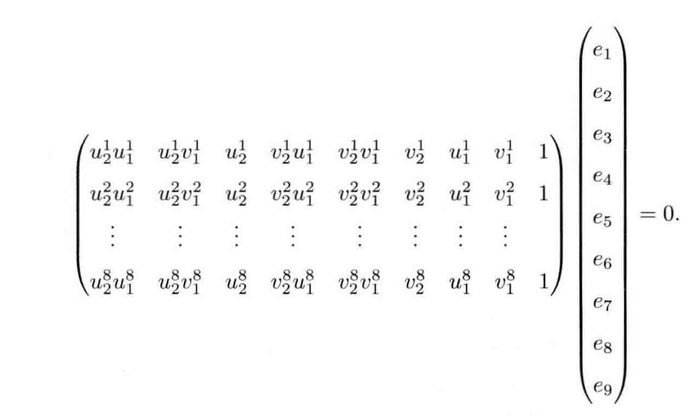
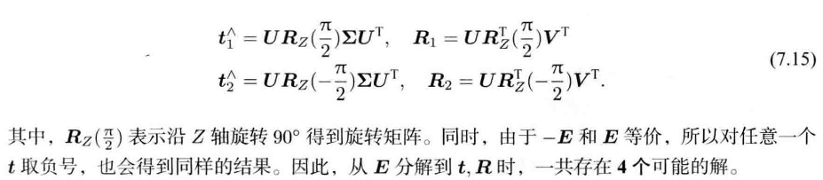
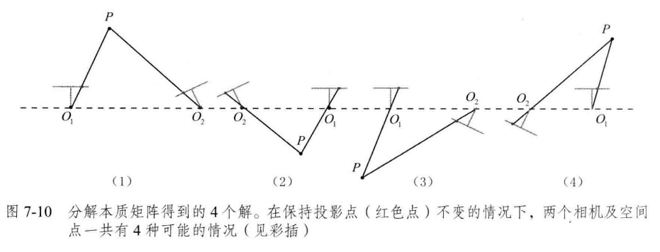

SLAM基础——对极几何(基础矩阵、本质矩阵与尺度模糊问题)
从问题出发
在单目SLAM的场景下，我们可以通过特征特征，在两帧RGB图像中找到一些具有对应关系的特征点对（一一对应关系）

\[ \begin{split} PP &= \{(\textbf{p}_1^i, \textbf{p}_2^i)\} \quad i = [1,2,3,...,N]\\ &\textbf{p}_1^i \in \textbf{I}_1\\ &\textbf{p}_2^i \in \textbf{I}_2\\ \end{split} \]
我们现在的目的是从两张图片之间这些匹配的点对，恢复这两张图像的相机相对位姿
对极几何
我们先把一个点对拿出来单独观察。这个点对（\(\textbf{p}_1,\textbf{p}_2\)）对应着三维空间中一个点\(P\)，可以画出下面的示意图

由相机的成像原理我们可以很直观地想象：从两个相机的光心分别射出一条光线并分别经过\(\textbf{p}_1\)和\(\textbf{p}_2\)，这两条光线会相交于空间中一个点\(P\)
一些定义
- 极平面（Epipolar plane）：由两个相机光心与空间中点\(P\)组成的平面\(O_1O_2P\)
- 基线：两个相机光心的连线\(O_1O_2\)
- 极点（Epipoles）：两个相机光心的连线\(O_1O2\)于两个像平面的交点\(e_1,e_2\)
- 极线（Epipolar line）：极平面于像平面的交点，也就是图中的线\(l_1=p_1e_1\),\(l_2=p_2e_2\)
PS：提前插入一点尺度不确定性相关内容
在上面的图中，我们如果把整个图中\(O_1P,O_2P,O_1O_2\)等比例放大一下，保持两个图像不变和两个像素点\(p_1,p_2\)的坐标不变，其实整个几何约束关系也是成立的。这其实也就是说，两个相机之间的平移，其实也就是基线，乘以一个非零系数，那么依旧符合相机成像的约束。我们后面会在公式推导中也发现这一点。
对极约束
其实我们的目标就是找出一些像素点对\((\textbf{p}_1^i,\textbf{p}_2^i)\)是怎么被两个相机的相对位姿\(T_{21}=[R_{21},t_{21}]\)联系起来的，然后求解方程就可以得到相机之间的位姿。而三维点\(P\)只是一个中间代理。为了方便，我们先假设\(P_1=[X,Y,Z]\)在相机1的坐标系下，则，根据相机的投影模型，有
\[ s_1\textbf{p}_1=KP_1,\quad s_2\textbf{p}_2=K(R_{21}P_1+t_{21})\tag{1} \]
在使用齐次坐标式，上面的公式中\(s_1\textbf{p}_1\)与\(\textbf{p}_1\)在尺度意义下相等，可以记为
\[ s_1\textbf{p}_1 \simeq\textbf{p}_1\tag{2} \]
我们另外记\(P\)点在两个相机下的归一化平面坐标为\(\textbf{x}_1, \textbf{x}_2\)（归一化平面即\(Z=1\)）
\(\textbf{x}_1, \textbf{x}_2\)与对应的原始点相差一个比例系数，即
\[ \lambda_1\textbf{x}_1 = P_1\\ \lambda_2\textbf{x}_2 = P_2\\ \]
根据\(P_1,P_2\)的关系，可以得到
\[ \lambda_2\textbf{x}_2 = \lambda_1R_{21}\textbf{x}_1+\textbf{t}_{21}\tag{3} \]
对于比例系数来说，具体数值我们是无法确定的，因此，上式可以整理成
\[ \textbf{x}_2 = \alpha R_{21}\textbf{x}_1+\beta \textbf{t}_{21}\tag{4} \]
公式（4）两边同时与向量\(\textbf{t}_{21}\)做外积，等价于同时左乘\(\textbf{t}^{\wedge}\)（忽略下标）
\[ \textbf{t}^{\wedge}\textbf{x}_2 = \alpha \textbf{t}^{\wedge}R\textbf{x}_1 \tag{5} \]
上式等号左右再左乘\(\textbf{x}_2^T\)
\[ \textbf{x}_2^T\textbf{t}^{\wedge}\textbf{x}_2 = \alpha\textbf{x}_2^T \textbf{t}^{\wedge}R\textbf{x}_1 \tag{6} \]
由于向量\(\textbf{t}^{\wedge}\textbf{x}_2\)垂直于\(\textbf{t}\)和\(\textbf{x}_2\)，因此，公式（6）的左侧严格为0。因此系数\(\alpha\)可以消掉并简单记为
\[ \textbf{x}_2^T \textbf{t}^{\wedge}R\textbf{x}_1 = 0 \tag{7} \]
归一化平面坐标\(\textbf{x}_1,\textbf{x}_2\)可以由像素坐标左乘内参的逆得到，即
\[ \begin{split} \textbf{x}_1 &= K^{-1}\textbf{p}_1\\ \textbf{x}_2 &= K^{-1}\textbf{p}_2\\ \end{split}\tag{8} \]
将公式（8）代入公式（7）可以得到
\[ \textbf{p}_2^TK^{-T}\textbf{t}^{\wedge}RK^{-1}\textbf{p}_1=0\tag{9} \]
基础矩阵（Fundamental Matrix）F与本质矩阵（Essential Matrix）E
公式（7）和公式（9）都可以叫做对极约束。公式（7）忽略了相机内参的影响，因为一般在SLAM中相机内参是已知的，而归一化平面坐标可以方便地由相机内参和像素坐标得到，因此公式（7）是公式（9）的简化形式。
一句话总结对极约束：
对极约束实际上描述匹配点对（像素）的空间关系（与相机位姿的关系）
为了简便，我们可以记公式（9）中间部分为两个矩阵
\[ \begin{split} E &= \textbf{t}^{\wedge}R \\ F &= K^{-T}EK^{-1} \end{split}\tag{10} \]
其中\(E\)称为本质矩阵（Essiential Matrix），\(F\)称为基础矩阵（Fundamental Matrix）
基于\(E,F\)的定义，对极约束，即公式（7）（9）又可以记为
\[ \begin{split} \textbf{p}_2^T F \textbf{p}_1 &= 0\\ \textbf{x}_2^T E \textbf{x}_1 &= 0 \end{split}\tag{11} \]
也就是，本质矩阵和基础矩阵实际上可以将一个图像中的特征点映射到另一个图像中。
本质矩阵与基础矩阵的求解
公式（11）简洁地描述了对极约束。让我们回归到最原始问题，如何根据匹配点对恢复相机间的运动？可以拆分成下面两步
- 根据匹配点对的关系（即公式（11））求解本质矩阵或者基础矩阵。因为内参已知，我们一般直接求解本质矩阵
- 根据本质矩阵的内在关系进行分解，求出\(R,\textbf{t}\)
我们先来看看怎么根据匹配点对集来求解本质矩阵。
本质矩阵是一个3x3矩阵，但其是由旋转与平移组成（6自由度），并且，要注意到公式（11）可以对任意尺度成立，也就是说本质矩阵可以放缩任意一个尺度，因此，本质矩阵有5个自由度。 因此，从理论上最少可以由5对点对求解（注意这里与PnP算法的不同，PnP算法等号两边没有0,一个点对可以建立两个等式，因此一个点对可以约束2个自由度。而这里一个点对只能建立一条等式，也就是约束一个自由度，因此需要5个点对）
但是一般我们会用8个点对求解，也就是八点法。将8对点代入方程（11）的第二条等式，并将本质矩阵展开为一维向量，则可以建立线性方程组 （点对的归一化平面坐标：\(\textbf{x}_1^T = [u_1, v_1, 1]\)， \(\textbf{x}_2^T=[u_2,v_2,1]\)）
\[ \begin{split} \begin{bmatrix}{} u_2&v_2&1 \end{bmatrix} = \ \begin{bmatrix}{} e_1&e_2&e_3\\ e_4&e_5&e_6\\ e_7&e_8&e_9 \end{bmatrix} \begin{bmatrix}{} u_1\\v_1\\1 \end{bmatrix} \end{split}\tag{12} \]
展开后可以得到如下形式

以上方程求解后就可以得到本质矩阵（对任意尺度成立）
接下來第二步就是根据本质矩阵求出对应的旋转平移
这一个部分推导可能比较复杂，SLAM十四讲没有给出这部分推导，记住步骤和结论就可以
- 记住本质矩阵的内在性质：本质矩阵的奇异值是\([\sigma,\sigma,0]^T\)的形式
- 通过对本质矩阵\(E\)进行SVD分解得到\(E = U \Sigma V^T\)
- 对于一个\(E\)，存在两个可能的\(t,R\)与其对应
求解过程忽略，我们只需要只能根据E可以分解出两对R,t如下

另外，由于\(-E\)和\(E\)等价，因此对\(t\)取负号也可以，于是有4中\(R,t\)的组合，分别对应下面图中的其中一种相机情况

我们需要利用任何一个点进行三角化，并根据\(R,t\)检查其在两个相机坐标系下的深度值，当在两个相机下深度值都为正，说明该解为最终解
具体求解推导
- 本质矩阵分解求取\(R,t\)可以参考：Wiki:Essential_matrix
- 根据本质矩阵进行三角化可以参考：Wiki:Triangulation
与单应矩阵的区别
- 单应矩阵是基于平面假设，可以将一个图像中的平面映射到另一个图像。而对极约束不依赖平面假设。
- 单应矩阵的求解中，一个点可以构造两条方程，同时单应矩阵的自由度为8（具有尺度不变性），因此最少可以用4对点求解
- 从单应矩阵也可以分解出多组\(R,t\)，此时也需要进行三角化确认哪一组是正确的解
- 通常我们会同时估计本质矩阵\(E\)和单应矩阵\(H\)，最终选择重投影误差更小的作为当前的几何假设
对极约束的几何意义
对极约束的基础公式是公式（9）：
\[ \textbf{p}_2^TK^{-T}\textbf{t}^{\wedge}RK^{-1}\textbf{p}_1=0\tag{9} \]
或者写成\(F,E\)的形式：
\[ \begin{split} \textbf{p}_2^T F \textbf{p}_1 &= 0\\ \textbf{x}_2^T E \textbf{x}_1 &= 0 \end{split}\tag{11} \]
对极约束公式实际上表示的是\(O_1PO_2\)三点共面，也就是对于点\(p1\)，用基础矩阵\(F\)可以将其映射到图2的几线上。
！！！注意，基础矩阵并不能将\(p_1\)映射到图2的\(p_2\)上！！！
在[ORB-SLAM]中，计算基础矩阵的投影分数是这样计算的
1 | const cv::KeyPoint &kp1 = mvKeys1[mvMatches12[i].first]; |
尺度不确定性
在上一节中，我们讨论到\(E\)有尺度不变性，因此分解出来的\(R,t\)也有尺度不变性。\(R\)本身有约束，对于\(t\),我们可以将其归一化，让它长度为1。因此，我们无法确定\(t\)的单位。这一点实际上从最开始的图，也就是下图可以看出，当我们同时对地图和轨迹进行放缩，我们得到的图像实际上是一样的！！！，也就是说，在单目SLAM中，我们无法确定地图和轨迹的真实尺度
单目SLAM的初始化
由于在单目SLAM中，相机轨迹之间的平移是尺度不确定的，因此我们必须进行初始化，以初始化是两张图片之间的\(t\)作为单位1,后续的点就可以用3D-2D匹配的方法求解。这样后续的轨迹中的平移就会以初始化时的平移为单位。
另外注意到，如果初始化时两帧之间没有平移，那么\(E\)就会变成0,此时也无法分解出\(R\)，因此，我们要求在初始化的时候相机之间必须有平移。一般的做法是初始化的时候相机之间的平移要较大一点。
总结
- 真正理解对极约束和基础矩阵、本质矩阵的求解还是需要通过实践。虽然OpenCV已经将本质矩阵和基础矩阵的求解封装为函数
- 基础矩阵反映了两个图像中对应的图像点对坐标的关系;本质矩阵反映了两个图像对应特征点的归一化平面坐标的几何联系;单应矩阵反映了两个图像中同一个3D平面的像素点关系
- 本质矩阵可以通过匹配点对，并使用八点法求解。求解出本质矩阵之后，进一步分解可以得到四组\(R,t\)，需要根据三角化选择让三维点在两个相机坐标系下均有正的深度值的那一组解